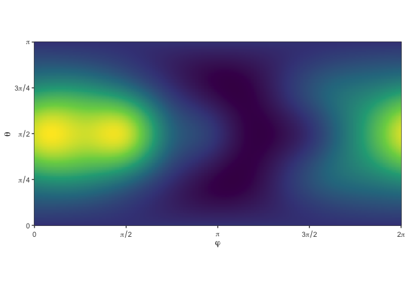

cubs is a utility package wrapping several commonly-used spherical cubature rules in a convenient interface:
LebedevSpherical t-DesignsGauß-LegendreFibonaccigridQuasi Monte-Carlorandomcubs
You can install from GitHub with:
# install.package('remotes')
remotes::install_github('nano-optics/cubs')Let’s request a Lebedev cubature with approximately 10 points,
cubs(N = 10, 'lebedev')| phi | theta | weight | |
|---|---|---|---|
| 1 | 0.0000000 | 1.5707963 | 0.0666667 |
| 2 | 3.1415927 | 1.5707963 | 0.0666667 |
| 3 | 1.5707963 | 1.5707963 | 0.0666667 |
| 4 | -1.5707963 | 1.5707963 | 0.0666667 |
| 5 | 1.5707963 | 0.0000000 | 0.0666667 |
| 6 | 1.5707963 | 3.1415927 | 0.0666667 |
| 7 | 0.7853982 | 0.9553166 | 0.0750000 |
| 8 | 0.7853982 | 2.1862760 | 0.0750000 |
| 9 | -0.7853982 | 0.9553166 | 0.0750000 |
| 10 | -0.7853982 | 2.1862760 | 0.0750000 |
| 11 | 2.3561945 | 0.9553166 | 0.0750000 |
| 12 | 2.3561945 | 2.1862760 | 0.0750000 |
| 13 | -2.3561945 | 0.9553166 | 0.0750000 |
| 14 | -2.3561945 | 2.1862760 | 0.0750000 |
Lebedev, 10 points requested
Let’s try a known integrand,
f1(x, y, z) = 1 + x + y2 + x2y + x4 + y5 + x2y2z2
with the usual spherical coordinates,
We want to estimate the integral $$ I = \\frac{1}{4\\pi}\\int\_0^{\\pi} \\int\_0^{2\\pi} f(\\varphi,\\theta) \\sin\\theta\\, \\mathrm{d} \\varphi \\mathrm{d} \\theta . $$ numerically, i.e. with a spherical cubature $$ I \\approx \\sum\_{\\varphi\_i,\\theta\_i}^{i=1\\dots N} f(\\varphi\_i,\\theta\_i) w\_i, $$

We compare the exact value, 216π/35, to the Lebedev cubature for increasing number of points.
| source | value |
|---|---|
| lebedev N=14 | 19.5476876223365 |
| lebedev N=26 | 19.3881146621542 |
| exact | 19.3881146621542 |
This package merely wraps existing rules in a convenient interface; the original cubature points were obtained from:
Lebedev: from John Burkardt’s webpage, using the SPHERE_LEBEDEV_RULE C routine. The routine itself implements the original reference by Lebedev and Laikov
Vyacheslav Lebedev, Dmitri Laikov, A quadrature formula for the sphere of the 131st algebraic order of accuracy, Russian Academy of Sciences Doklady Mathematics, Volume 59, Number 3, 1999, pages 477-481.
Spherical t-Designs: from Rob Womersley’s webpage, using the provided tables of Spherical t-designs (SF29-Nov-2012).
Gauß-Legendre: we use the gauss.quad routine from the statmod package to compute 1D quadrature nodes on [ − 1, 1], and take a cartesian product with a mid-point rule along φ.
QMC: we use the halton routine from the randtoolbox package to generate a 2D low-discrepancy sequence of points in [0, 1] × [0, 1].
Fibonacci, grid, and random are implemented directly in the package.